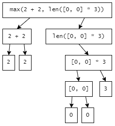
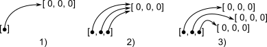
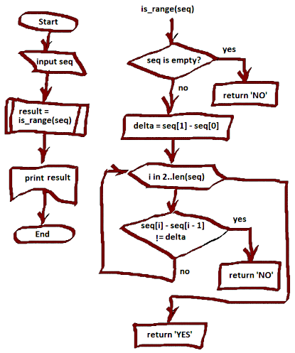

Элементы программы на языке Python
Элементы программы на языке Python
Элементы программы на языке Python
Комментарий начинается с символа #, они игнорируются интерпретатором и нужны для пояснения
программистам или тем, кто читает код:
>>> print("Hello, world!") # этот текст будет проигнорирован
Hello, world!Переменная может иметь короткое имя (например, x и y) или более описательное имя (age,
name, total_amount).
Правила для переменных Python
A-z, 0-9 и _).age, Age и AGE — это три разные переменные).myvar = "John"
my_var = "John"
_my_var = "John"
myVar = "John"
MYVAR = "John"
myvar2 = "John"Использование переменных
>>> name = 'Sasha'
>>> print(name)
Sasha
>>> print('Hello', name)
Hello SashaЗначение — это элемент данных, которым манипулирует программа. Любое значение каким то образом представлено в памяти. В программе они указываются непосредственно (в виде литералов) или появляются в результате вычисления (будет рассмотрено позже).
Далее будут рассмотрены различные типы значений.
Примеры: 20, -5, 2.5, 2.5e2 (2,5 * 102 = 250).
В Python существует три числовых типа:
int — целые числаfloat — числа с плавающей точкойcomplex (специфический тип, сейчас рассматриваться не будет)Ввод числа с плавающей точкой:
>>> f = float(input())
12.5
>>> print(f + 1)
13.5Преобразование типов чисел с помощью методов int(), float():
>>> x = 1 # int
>>> y = 2.8 # float
>>> a = float(x) # convert from int to float
>>> b = int(y) # convert from float to int
>>> print(a)
1.0
>>> print(b)
2
>>> print(type(a))
<class 'float'>
>>> print(type(b))
<class 'int'>Примеры: "a", "b", "23", 'A, "Z", s', "A, 'Z', s". В строке могут использоваться
специальные последовательности:
\": "Ф, П, \"р\", т" — двойная кавычка внутри строки;\': 'Ф, П, \'р\', т' — одинарная кавычка внутри строки;\\ — это один слеш;\n — это перевод строки.Присвоить строку переменной:
>>> a = "Hello"
>>> print(a)
HelloПеребор строки
Поскольку строки являются массивами, мы можем перебирать символы в строке с помощью цикла for.
>>> for x in "banana":
... print(x)
...
b
a
n
a
n
aФункция len() возвращает длину строки:
>>> a = "Hello, World!"
>>> print(len(a))
13Имеются только два логических значения: True и False.
Логические значения в языке Python могут интерпретироваться как числа: True как 1, False как 0.
>>> True + True
2
>>> True + False
1
>>> False + False
0
>>> s = [10, 20]
>>> s[False]
10
>>> s[True]
20Есть другие типы значений, которые мы рассмотрим позже.
Чтобы проверить тип любого объекта в Python, используется функция type():
>>> x = 1 # int
>>> y = 2.8 # float
>>> s = "demo" # string
>>> print(type(x))
<class 'int'>
>>> print(type(y))
<class 'float'>
>>> print(type(s))
<class 'str'>Операции нужны для выполнения действий над значениями:
+, -, *, /;// — деление нацело, % — остаток от деления."А" + "В" даст в результате "AB"; 'a' * 5 даст 'aaaaa';==, !=, >, <, >=, <=,
например: 1 >= 2 даст False, "А" == 'A'даст True. логические: and, or, not, например:
| Выражение | Вернет значение |
|---|---|
True and True |
True |
True and False |
False |
False or True |
True |
not False |
True |
операция присвоения будет рассмотрена позже.
Более подробно можно посмотреть здесь.
Переменные — это ссылка на значение и могут использоваться также как и значения. Они могут
участвовать в операциях. Переменная имеет имя и указывается с использованием этого имени, например
a, dey_of_week, x1. Переменным могут быть присвоены значения. Например, после выполнения
операции x = 5 использование x будет приравнено к использованию числа 5.
а = 3 # переменной присваиваем значение 3
а += 4 # увеличиваем значение на 4
а = а + 4Выражение — это конструкция состоящая из:
Пример выражения: 20 + Х - len(a).
Выражение в программе вычисляется и формируется значение, которое может быть присвоено переменной
либо участвовать в вычислении других выражений. Указатель значения либо переменной, так же является
выражением. Например: 5, Х, "Х".
Значение которое заданно непосредственно без вычислений называется литералом. Например: "аbc",
25.3.
Выражение можно представить как иерархическую структуру, в которой одни элементы (выражения) включают другие. Рассмотрим пример:
max(2 + 2, len([0, 0] * 3))
На самом верхнем уровне выражение является вызовом функции max с двумя аргументами. Функция
принимает аргументы в виде значений, следовательно, выражения, заданные в качестве аргументов,
должны быть предварительно вычислены.
Первый аргумент представляет собой операцию сложения двух значений, заданных литералами. Результатом этой операции будет 4.
Второй аргумент предоставляет собой вызов функции len с аргументом, заданным выражением,
которое, в свою очередь, представляет собой умножение списка (заданного литералом) на число (тоже
заданное литералом). Элементы списка так же заданны литералами. Результатом умножения будет список
из шести нулей. Следовательно, функция len вернет 6.
В конечном счете функция max будет вызвана с аргументами 4 и 6 и вернет 6.
Ветвление — это управляющая конструкция, которая позволяет выбрать последовательность операции в некоторой точке программы. Без управляющих конструкций операции выполняются в том порядке, в котором они представлены в программе. Последующие операции выбираются по условию, которое являются логическим выражением.
t = 38
if t < 37: # оператор условия *if* со значением *t < 37*
print('здоров') # тело условия
else: # "альтернативная ветка"
print('болен') Программа напечатает "болен".
Цикл — это управляющая конструкция, которая позволяет выполнять последовательность операций
несколько раз. Два вида циклов: цикл по условию while и цикл по счетчику for.
Тело цикла выполняется до тех пор, пока условие верно.
i = 3
while i > 0:
print(i)
i = i - 1Программа выведет : 1, 2, 3.
Цикл по счетчику выполняется по элементам итерируемого объекта. Итерируемым объектом может быть массив, из него можно последовательно получать (читать) элементы.
a = [1, 2, 3]
for x in a:
print(x)Цикл for последовательно выбирает элементы списка а и присваивает их переменной х, которую
можно использовать в теле цикла. Этот цикл можно назвать синтаксический сахар, потому что все тоже
самое можно сделать с помощью цикла while.
Список является итерируемым объектом, поэтому его можно использовать в
операторе for.
Другим вариантом итерируемого объекта является последовательность. В математике ее могут называть
прогрессией. Функция range() является генератором, представляет арифметическую прогрессию и
принимает аргументы:
Если указать один аргумент, то последовательность будет от 0 до указанного числа с шагом +1.
for i in range(2, 8, 2):
print(i)Данная программа напечатает 2, 4, 6.
for i in range(3):
print(i)Данная программа напечатает 0, 1, 2.
elseТакже в циклах while и for можно указать else-блок после основного блока цикла. else-блок в
циклах выполняется один раз после завершения работы цикла, но только в случае, если цикл не был прерван
инструкцией break.
n=input("Введите целое число, больше 1 ") # 1 Считали число n
for d in range(2, n): # 2 d меняется от 2 до n-1
if n % d == 0: # 3 Проверка: n делится на d?
print n, "имеет делитель", d # 4
break # 5 Завершаем цикл for
else: # 6 Это else-блок цикла
print n, "простое число" # 7Циклы for и while являются циклами с предусловием, т.е. условие проверяется перед началом
итерации и возможно такая ситуация, когда тело цикла не выполняется ни разу.
(В случае с циклом for это происходит, если итерируемый объект пустой.) В цикле с постусловием
условие проверяется по
окончанию итерации и поэтому как минимум одна итерация будет выполнена. В языке нет специального
синтаксиса для циклов с постусловием. Однако они могут быть реализованы следующим образом.
Например есть задача: получать числа с клавиатуры и считать сумму положительных чисел, при вводе
отрицательного числа прекратить выполнение программы.
sum = 0
while True:
a = int(input())
if a < 0:
break
sum += a
print(sum)Здесь постусловие относится к вводу числа с клавиатуры. Мы не знаем, что будет введено поэтому нам нужно начать выполнение тела цикла в любом случае. Дальше принимается решение переходить или нет на следующую итерацию.
В цикле for указывается переменная и множество значений, по которому будет пробегать переменная. Множество значений может быть задано списком, кортежем, строкой или диапазоном. В списке значений могут быть выражения различных типов, например:
for i in 1, 2, 3, 'one', 'two', 'three':
print(i)Итерируемые объекты — объекты позволяющие получать последовательность значений. К таким объектам относятся:
Итерируемые объекты можно использовать в цикле for:
>>> for i in {'a', 'b', 'c'}:
... print(i)
...
a
c
b
Функция zip() является интересным примером. Она принимает итерируемые объекты и возвращает
генеротор (который также являются итерируемым объектом). Пример:
>>> for i, j in zip(range(1, 4), ['яблоки', 'груши', 'сливы']):
... print(i, j)
...
1 яблоки
2 груши
3 сливыВ данном примере функция zip() принимает два итерируемых объекта, генератор и список, и
возвращает последовательность пар элементов (кортеж). В цикле for данные значения присваиваются
переменным цикла i и j.
Функция в python - это объект, принимающий аргументы и возвращающий значение.
Функция обеспечивает инкапсуляцию программного кода, т.е. предоставляет единую точку входа
и избавляет пользователя функции от необходимости знать особенности ее реализации.
Обычно функция определяется с помощью инструкции def. Инструкция return говорит, что нужно
вернуть значение. Чтобы вызвать функцию, используйте имя функции, за которым следуют круглые скобки.
Термины параметр и аргумент могут считаться синонимами обозначающими значения, которые
передаются в функцию.
def bubble_sort(a):По умолчанию функция должна вызываться с правильным количеством аргументов. Это означает, что если
ваша функция ожидает 2 аргумента, вы должны вызывать функцию с 2 аргументами, не больше и не меньше.
Если вы не знаете, сколько аргументов будет передано в вашу функцию, добавьте *перед именем
параметра в определении функции. Аргументы приходят извне и внутри функции могут использоваться так
же, как и локальные (внутри функции) переменные. Аргументы, которые передаются в функцию через
запятую, называются позиционными. Существуют и именнованные параметры, которые имеют имена.
Например:
print (1, 'a', True, sep=',', end= '|')В данном примере в функцию print передаются три позиционных аргумента (1, 'a', True) и два
именнованных аргумента (sep=',', end= '|'), они указываются всегда после позиционных.
Особенности функций как объектов первого класса:
def print_field(string, transform):
print('[' + transform(string) + ']')
def simple_transform(string):
return string # Что пришло, то функция и вернула
def password_transform(string):
return '*' * len(string) # Возвращает звездочки
print_field("I love my cat", simple_transform)
print_field("my secret", password_transform)Объяснение. Функция print_field принимает в качестве второго аргумента функцию, которую вызывает
внутри своего тела. При вызове функции print_field ей могут быть переданы различные функции с
различным поведением. В данном примере будет выведено:
[I love my cat]
[*********]Другой пример использования функции как объекта можно посмотреть здесь.
В функцию print_field можно передавать анонимную функцию используя lambda-выражение.
print_field("I love my cat", lambda s: s)
print_field("my secret", lambda s: '*' * len(s))В данном случае lambda-выражение позволяет нам определить функцию на месте, т.е. в той точке кода,
где требуется ее указать. По сравнению с предыдущим вариантом, дополнительных функций
(simple_transform и password_transform) создавать не нужно. Результат выполнения будет такой
же точно.
Другой пример использования lambda-выражений смотри здесь.
Функция может возвращать результат. Для этого в функции используется оператор return, после
которого указывается возвращаемое значение:
1. def get_message():
1. return "Hello METANIT.COM # return возвращаемое значение.
message = get_message() # получаем результат функции get_message в переменную message
print(message) # Hello METANIT.COM
# можно напрямую передать результат функции get_message
print(get_message()) # Hello METANIT.COMОператор return не только возвращает значение, но и производит выход из функции. Поэтому он должен определяться после остальных инструкций.
yield — это ключевое слово в Python, которое используется для возврата из функции с сохранением
состояния ее локальных переменных, и при повторном вызове такой функции выполнение продолжается с
оператора yield, на котором ее работа была прервана. Любая функция, содержащая ключевое слово yield,
называется генератором. Можно сказать, yield — это то, что делает ее генератором. Хотя оператор yield
в Python не отличается популярностью, но он имеет множество достоинств, о которых стоит знать.
def fibonacci(n):
"""функция-генератор возвращает последовательность Фибоначчи"""
f1 = -1
f2 = 1
for i in my_range(0, n, 1):
f3 = f1 + f2
yield f3
f1 = f2
f2 = f3yield:
Поскольку генераторы автоматически сохраняют и управляют состояниями своих локальных переменных, программист не должен заботиться о накладных расходах, связанных с выделением и освобождением памяти. Так как при очередном вызове генератор возобновляет свою работу, а не начинает с самого начала, общее время выполнения сокращается.
Недостатки yield:
Иногда использование yield может вызвать ошибки, особенно если вызов функции не обрабатывается
должным образом.
За оптимизацию времени работы и используемой памяти приходится платить сложностью кода, поэтому иногда
трудно сходу понять логику, лежащую в его основе.
Функция input() в Python временно приостанавливает выполнение программы и ожидает, пока
пользователь введёт данные. Как только функция получает данные от пользователя, Python автоматически
заносит их в переменную, чтобы с ними было удобно работать.
Функция input() получает только один аргумент и это текст подсказки, который выводится на экран,
чтобы пользователь понимал что от него требуется.
X = int(input())
Y = int(input())
print(X*60 + Y)
5
20
320Функция input() всегда возвращает строковое значение, даже числа возвращаются в виде строковых
символов. Функция int() принимает текстовое представление целого числа и возвращает
соответствующее число. Например:
>>> print(int('0017'))
17
Функция sqrt() – это встроенная функция, которая возвращает квадратный корень из любого числа.
a = int(input())
b = int(input())
c = int(input())
p = ((a + b + c) / 2)
s = (p * (p-a) * (p-b) * (p-c)) ** (1/2)
print(s)Массив — это сложное (композитное) значение, состоящее из идущих подряд значений, которые называются элементами массива.
x = 10
a = [1, 'hi', 1 + 1, x] # В данном примере массив *а* содержит элементы: [`1`, `hi`, `2`, `10`]
Элементы массива имеют порядковые номера, которые называются
индексами. Индексы — это последовательные целые числа начинающиеся с нуля. Доступ к элементу
массива осуществляется по индексу следующим образом: выражение a[0] вернет выражение 1; после
операции a[2] = 2, третий по порядку элемент массива будет являться 2.
Для массивов определена функция len, которая возвращает длину массива. Выражение len(а)вернет
значение 4.
Массивы используют для предоставления набора значений количество которых заранее не известно. Рассмотренная структура, в языке Python, является не массивом, а списком, который в свою очередь является объектом (см. ниже). Данный объект обладает методами для манипуляции элементами массива или списка такими как, добавление, удаление, сортировка.
Вложеные списки — это когда в качестве элемента одного списка, являются другие списки. Если все вложенные списки имеют одинаковую длинну, то такой список может представлять прямоугольную таблицу или матрицу.
В языке программирования Питон таблицу можно представить в виде списка строк, каждый элемент которого является в свою очередь списком, например, чисел. Например, создать числовую таблицу из трёх строк и трех столбцов можно так:
| 5 | 2 | 7 |
| 3 | -6 | 8 |
| -1 | 4 | 9 |
>>> m = [[5, 2, 7], [3, -6, 8], [-1, 4, 9]]
>>> m
[[5, 2, 7], [3, -6, 8], [-1, 4, 9]]Мы можем обратиться к любому элементу из этой матрицы по индексам m[i][j].
>>> m[0]
[5, 2, 7]
>>> m[0][0]
5
>>> m[1]
[3, -6, 8]
>>> m[2][1]
4Пусть имеем вложенный список созданный следующим образом:
>>> a = [[0] * 3]В памяти это будет выглядеть следующим образом (поз. 1):

Если мы хотим иметь три вложенных списка, то мы можем поступить следующим образом:
>>> a = [[0] * 3] * 3При этом память будет выглядеть как на рисунке, поз. 2, т.е. элементы внешнего списка будут ссылаться на один и тот же список. При этом возможна следующая ситуация:
>>> a[0][0] = 1
>>> a
[[1, 0, 0], [1, 0, 0], [1, 0, 0]]Здесь был изменен первый вложенный список, но поскольку все вложенные списки это один и тот же список, то в результате список будет выглядеть так, как это видно из кода.
Чтобы создать действительно разные списки (как на рисунке в поз. 3) можно использовать средство генерации списков (list comprehension):
>>> a = [[0] * 3 for i in range(3)]
>>> a[0][0] = 1
>>> a
[[1, 0, 0], [0, 0, 0], [0, 0, 0]]Кортежи можно представить как неизменяемые массивы. Кортеж задается перечислением значений через запятую, при необходимости данные перечисления можно взять в скобки. Помимо прочего они позволяют множественные присваивания. Присваивание значений сразу нескольким переменным.
def get_tuple():
return 5, "с", True # возвращает картеж из трех элементов разного типа.
# функция заканчивает свою работу.
А, В, С = get_tuple()
print(А, В, С)Скалярное значение, это некое неделимое значение, типа строка, число, логическое значение. Типы таких значений, так же называют скалярными.
Note
На самом деле строка предполагает деление на символы, но в контексте данного описания мы можем этим пренебречь.
Комплексное значение, это такое значение, которое содержит в себе другие значения. Среди комплексных значений можно назвать:
классы Количество значений объекта (экземпляра класса) определяется структурой класса. - коллекции
Коллекция — это комплексное значение, которое содержит изначально неопределенное количество других значений. К ним относятся: - списки - кортежи - словари - множества
Словарь можно представить как набор ключей и соответствующих им значений. Например:
>>> d={'dog': 'собака', 'cat': 'кот', 'human': 'человек'}
>>> d
{'dog': 'собака', 'cat': 'кот', 'human': 'человек'}В этом примере мы создали словарь d с тремя элементами. Рассмотрим основные операции со словарями.
>>> d['cat']
'кот'
>>> d['cow']
Traceback (most recent call last):
File "<stdin>", line 1, in <module>
KeyError: 'cow'Поиск по ключу 'cat' вернул соответствующее значение, а поиск по ключу 'cow' вызвал ошибку, потому что элемента с таким ключем в словаре нет. Возможен другой способ поиска, при котором для отсутствующего ключа возвращается пустое значение:
>>> print(d.get('cow'))
None>>> del d['human']
>>> d
{'dog': 'собака', 'cat': 'кот'}Important
Если удаляемый ключ отсутствует, то операция удаления вызовет ошибку KeyError как в
предыдущем примере.
>>> d['cow'] = 'корова'
>>> d
{'dog': 'собака', 'cat': 'кошка', 'cow': 'корова'}>>> d['cat'] = 'кошка'
>>> d
{'dog': 'собака', 'cat': 'кошка', 'cow': 'корова'}Note
Следует обратить на то, что синтаксис при изменении и добавлении элемента совпадает. Если ключ уже существует, то соответствующее значение меняется, в противном случае добавляется новый элемент с заданным ключом.
Имеется словарь d:
>>> d
{'dog': 'собака', 'cat': 'кошка', 'cow': 'корова'}Требуется выполнить с каждым элементом некоторые действия. Для простоты будем печатать ключи и значения. Существует три способа итерации.
Также см. цикл for.
>>> for k in d.keys():
... print(k)
...
dog
cat
cowМетод d.keys() возвращает список ключей словаря d как итерируемый объект. Следовательно, этот
объект может быть использован в цикле for. На каждой итерации переменная цикла k получает
значение очередного ключа.
Идентичным образом работает выражение for k in d:.
>>> for v in d.values():
... print(v)
...
собака
кошка
корова>>> for k, v in d.items():
... print(k, v)
...
dog собака
cat кошка
cow корова Метод d.items() возвращает список кортежей из двух элементов, ключа и значения. Поэтому
используются две переменные цикла, k и v.
Модуль в программировании — это независимая и функционально законченная часть программы, оформленная в виде фрагмента кода и сохранена в отдельный файл. Чтобы использовать модуль в другой программе мы его импортируем (import).
Более подробно смотри здесь.
Простые, "примитивные" типы данных описывают одно значение. Объекты реального мира моделируемые в программе могут иметь несколько атрибутов различных типов. Например, книга в каталоге может быть описана следующими атрибутами:
Классы- это сложные (композитные) типы данных, которые позволяют определить несколько именованных значений внутри некоторой программной сущности. Так же внутри класса могут быть определены фукции, которые манипулируют этими значениями. Например, следующий класс представляет сущность "Книга" описанную выше.
class Book:
def __init__(self, author, title, year, page_count): # функция __init__ это конструктор класса
# при вызове метода объекта нам обязательно необходимо использовать слово self
# для обращения к атрибутам объекта внутри класса в его методах также применяется слово self:
self.author = author # это одно из полей класса
self.title = title
self.year = year
self.page_count = page_count
def colofon(self):
return (self.author + ' "' + self.title + '", ' + str(self.year) + ' г., ' +
str(self.page_count) + ' c.')
Класс можно представить как шаблон, на основе которого создаются (инстанцируются) объекты, которые
иногда называются экземплярами класса. Пример:
book1 = Book('А. Блок', 'Ветер', 1975, 45) # выражение, создающее экземпляр класса Book
print(book1.author)
print(book1.title)
print(book1.colofon()) Программа выведет строки: "А. Блок", "Ветер".
Рассмотрим простой способ генерирования списка, например, квадратов чисел от 1 до 7:
>>> lst = []
>>> for i in range(1, 8):
... lst.append(i * i)
...
>>> lst
[1, 4, 9, 16, 25, 36, 49]Способ рабочий, но достаточно многословный. Конструкция list comprehension позволяет сделать это в одну строку:
>>> lst = [i * i for i in range(1, 8)]
>>> lst
[1, 4, 9, 16, 25, 36, 49]List comprehension работает подобно циклу for, только направляет значения переменной цикла
в генерируемый список. Подобным способом можно генерировать другие виды коллекций.
Также в этой конструкции возможна фильтрация, например, используя созданный список, сгенерируем кортеж, в который попадут только четные числа, деленные на 2:
>>> tuple(i // 2 for i in lst if i % 2 == 0)
(2, 8, 18)Теперь сгенерируем словарь используя тот же самый список, как набор ключей. Значениями будут являться двоичные представления этих чисел.
>>> {i: f"{i:b}" for i in lst}
{1: '1', 4: '100', 9: '1001', 16: '10000', 25: '11001', 36: '100100', 49: '110001'}Сгенерируем множество из некоторого произвольного списка.
>>> set(i for i in [2, 2, 1, 1, 3])
{1, 2, 3}Функция которая принимает на вход список целых чисел, удаляет из него все нечётные значения, а чётные нацело делит на два. Можно для решения использовать list comprehension.
def modify_list(numbers):
numbers[:] = [i//2 for i in numbers if i%2 == 0]Генерация коллекций (list comprehension) создает объект, который занимает какое-то место в памяти. Потребление памяти составляет О(N).
>>> [i*2 for i in range(5)]
[0, 2, 4, 6, 8]>>> (i*2 for i in range(5))
<generator object <genexpr> at 0x0000016E82F79BA0>Полученный объект генератора является итерируемый объектом, который будет возвращать генерируемые элементы, не сохраняя их в памяти.
g =(input() for _ in range(2))
>>> g = (i*2 for i in range(5))
>>> sum(g)
20Точно также можно было бы использовать list comprehension (с квадратными скобками), однако в этом случае был бы создан список с умноженными на два числами от 0 до 4, который после подсчета суммы нам больше не требуется. При использовании генератора (с круглыми скобками) умножение на 2 происходит "на лету", и полученные элементы нигде не накапливаются. Потребление памяти константно, О(1).
Можно посчитать сколько цифр в строке.
print(sum(i.isdigit() for i in input()))В этом примере используется интерпретация логических значений как чисел.
Пример использования можно также посмотреть и здесь.
Рассмотрим еще один пример.
В случае с list comprehension возвращается список, поэтому все действия (в том числе ввод с клавиатуры) выполняются до завершения формирования списка.
>>> a = [input() for _ in range(2)]
a
b
>>> a
['a', 'b']Для доказательства отложенной работы генератора рассмотрим следующий пример:
>>> g =(input() for _ in range(2))
>>> Здесь мы создали анонимный генератор, который определяет отложенные действия. Как мы видим ввод с клавиатуры не был запрошен. Это будет сделано во время использования данного генератора.
>>> for s in g: print('-->', s)
...
a
--> a
c
--> c
>>>Ошибки в программировании часто называют исключениями, англ. exception.
При возникновении ошибки в программе, Python прекращает выполнение программы и отображает сообщение об ошибке.
x = 0
print(f 'x = {x}') # (1)
y = 5 / x # (2)
print(y) # (3)>python hello.py
x = 0
Traceback (most recent call last):
File "hello.py", line 3, in <module>
y = 5 / x
ZeroDivisionError: division by zeroВ нашем примере (строка 1) была выполнена, в (строке 2) произошла ошибка, поэтому остальная часть программы (строка 3) не была выполнена. В данном случае сообщение об ошибке было выведено в консоль.
В каких-то случаях такое поведение является логичным, поскольку ошибка является неожиданной и
дальнейшее выполнение программы будет непредсказуемо. В нашем примере значение переменной y ,
после (строки 2) не определено, поэтому использование ее не возможно. Программист может обработать
возможную ошибочную ситуацию, например так:
x = 0
print(f'x = {x}') # (1)
if x == 0:
y = 0
else:
y = 5 / x # (2)
print(f'y = {y}') >python hello.py
x = 0
y = 0Такие решения должны быть тщательно продуманы и согласованы с бизнес-требованиями. Возможно, что в подобной ситуации заказчик ожидает, что программа аварийно завершит работу. Тогда данное решение приведет к сокрытию ошибки, которая может потом проявиться в других частях программы. В языке Python есть специальный способ обработки ошибок.
x = 0
print(f'x = {x}') # (1)
try:
y = 5 / x
except ZeroDivisionError:
y = 0 # (2)
print(f'y = {y}') >python hello.py
x = 0
y = 0Блок try - except (защищенный блок) определяет фрагмент программы, в котором ошибки не будут
сразу вызывать аварийное завершение всей программы. В блоке except есть возможность каким-то
образом устранить последствия ошибки и/или бросить тоже самое или другое исключение.
В данном примере указана конкретная ошибка ZeroDivisionError, которая будет "отлавливаться",
если конкретную ошибку не указать, то будут отлавливаться все ошибки.
В следующей задаче вводится массив чисел и некоторое число x. Требуется вывести все индексы числа
x в массиве. Если таковых нет, то вывести "None".
lst = [int(i) for i in input().split()]
x = int(input())
i = -1
while True:
try:
i = lst.index(x, i + 1)
except:
if i < 0:
print("None")
break
print(i, end=' ')Метод списка index() возвращает первый индекс заданного значения в массиве,
а если такого значения нет, то завершается исключением (ошибкой). В данном случае нам требуется
перехватывать исключения для корректного решения задачи.
Конструкции языка Python, требующие для своей работы логические выражения/значения, таки как
условия if и while, могут так же принимать выражения/значения других типов, которые
интерпретируются как логические. Например:
>>> if 1+1:
... print('yes')
yesКазалось бы. условному оператору требуется логический аргумент для принятия решения, однако в данном
мы видим, что в данном случае оператор if интерпретировал значение 2 как True. Особенностью
языка Python является то , что в нем значения разных типов могут приводиться к соответствующему
логическому значению. Основные правила таковы:
| Тип | False | True |
|---|---|---|
| число | 0 | все остальные |
| строка | пустая строка | не пустая строка |
| коллекция | пустая коллекция | не пустая коллекция |
| None | всегда | никогда |
По аналогии с функциями int() и str() есть функция bool, которая возвращает логическое
представление значений различных типов. Рассмотрим примеры ее работы:
| Тип | Выражение | Результат |
|---|---|---|
| число | bool(0) |
False |
| число | bool(0.0000001) |
True |
| число | bool(-1) |
True |
| строка | bool('') |
False |
| строка | bool('a') |
True |
| строка | bool('0') |
True |
| строка | bool('False') |
True |
| логический | bool([False]) |
True |
| список | bool([]) |
False |
| список | bool([5, 'a']) |
True |
| словарь | bool({}) |
False |
| словарь | bool({1:'s'}) |
True |
| коллекция | bool({1:'s'}) |
True |
| коллекция | bool(set()) |
False |
| коллекция | bool(set([5,a])) |
True |
None |
bool(None) |
False |
В языке Python функции могут иметь фиксированное количество аргументов. Например, функция input()
принимает 0 или 1 аргумент:
>>> print(input('23',' hjk'))
TypeError: input expected at most 1 argument, got 2 (функция не может принимать больше 1 аргумента)Однако есть функции, которые могут принимать различное количество аргументов, например функция
print() печатает переданное количество аргументов с заданным разделителем. Рассмотрим пример
написания подобной функции.
def minimum(*args):
if len(args) < 1:
return None
min_valiu = args[0]
for v in args:
if v < min_valiu:
min_valiu = v
return min_valiu
print(minimum())
print(minimum(42))
print(minimum('b', 'a'))
print(minimum(2, 3, 5, 0, 1)) >python delete.py
None
42
a
0Функция minimum может принимать разное количество аргументов, в том числе ноль. В списке
аргументов такой функции следует указать * перед именем аргумента. При этом при вызове функции
все переданные ей аргументы представляются как единое значение типа список.
Important
Точно такой же синтаксис используется при вызове функции, однако тогда он имеет совсем другое значение (см. здесь).
Бывают ситуации, когда есть функция принимающая определенное количество аргументов, и есть
коллекция, содержащая соответствующее количество элементов. Например, функция range() может
принимать три аргумента и, предположим, есть такая коллекция:
>>> a = [1, 6, 2]Вызвать функцию range() с аргументами из этого списка можно так:
>>> for i in range(a[0], a[1], a[2]):
... print(i)
...
1
3
5В языке Python есть более короткий способ с использованием так называемой распаковки коллекций
(англ. spread operator), которая преобразует коллекцию в отдельные аргументы при вызове функции.
Применяется путем добавления * перед указанием коллекции:
>>> for i in range(*a):
... print(i)
...
1
3
5Как можно видеть, результат тот же самый!
Important
Данное использование символа * отличается от его использования при определении функции
(см. здесь). В данном случае мы функцию не определяем,
а вызываем.
Вот еще один пример использования:
a = sorted([int(input()) for _ in range(3)], reverse=True)
print(*a, sep="\n") На вход программе подается три целых числа, каждое на отдельной строке. Программа должна вывести три числа, каждое на отдельной строке, упорядоченных от большего к меньшему.
Note
На самом деле использование распаковки здесь необязательно. Функция min может принимать
итерируемый объект в качестве единственного аргумента.

В языке Python отступы используются для структурных частей программы. В отличии от многих других языков программирования, в ввиду отсутствия операторных скобок, отступы и переводы строк являются значимыми элементами программного кода. То есть изменения отступа изменяет поведение программы. Рассмотрим пример. Следующая программа определяет являются ли элементы списка частью арифметической прогрессии.
Алгоритм работы программы изобразим в виде блок-схемы, которая иллюстрирует последовательность выполнения действий и необязательно привязана к конкретному языку. В данном случае блок-схема определяет отдельные операции ввода и вывода данных, которые мы планируем реализовать в более простом виде.
def is_range(sek): # (1)
if len(sek) < 3: # (2)
return 'NO' # (3)
delta = sek[1] - sek[0] # (4)
for i in range(2, len(sek)): # (5)
if sek[i]- sek[i - 1] != delta: # (6)
return 'NO' # (7)
return 'YES' # (8)
print(is_range([2, 5, 8, 11])) # (9)(1) — начинается определение функции. Нулевой отступ говорит о том, что это будет обязательно выполнено при исполнении модуля ( файла в котором находится этот код). Код в строках (2...8) является подчиненным к строке (1). Поэтому строки (1...8) можно условно считать одной ( хотя и составной) инструкцией. Следующая инструкция в таком случае, можно считать код в строке (9).
(2) — один отступ ( 4 пробела). Первая инструкция внутри функции, будет обязательно исполнена при вызове функции.
(3) — тело условия, один отступ внутри родительского (условного) блока, всего два отступа. Данная
инструкция return, будет выполнена только при определенном условии.
(4) — один отступ. т. е. можно считать следующим оператором после if (2). В данном случае он
может не выполниться, если предыдущее условие окажется верным и выполнение функции завершится.
Однако если выполнение функции попадет в строку (4), то эта строка точно будет выполнена.
Возможные ошибки
Если в строке (4) добавить еще один отступ то, она окажется в блоке if после оператора
return, что в данном случае не имеет смысла потому что после оператора return функция
завершает выполнение.
К тому же, если условие окажется ложным то (4) строка не выполнится. Следовательно переменная
delta не будет определена, что приведет к ошибке ее использования в строке (6).
(5) — один отступ, цикл точно будет выполнен после строки (4).
(6, 7) — тело цикла, один отступ внутри родительского блока for, итого соответственно
2 и 3 отступа. Здесь рассуждения те же самые, что и внутри строк (3, 4).
(8) — один отступ, может быть выполнена после завершения цикла for. В данном случае внутри цикла может произойти возврат значения и, соответственно, завершения работы функции. В этом случае строка (8) выполнена не будет.
Возможные ошибки
Если добавить строке (8) еще два отступа, то ошибка будет аналогична предыдущей. Только в
данном случае ошибки в выполнении не произойдет и программа вместо ответа "Yes" выдаст ответ
None. А это явно не то что нам нужно.
Если в строку (4) добавить один дополнительный отступ, то тогда тело цикла выполнится не более одного раза, т. е. будут проверены не все элементы. Это явно не то, что нам нужно.
(9) — нулевой отступ, будет обязательно выполнена при исполнении текущего модуля (если, конечно, определение функции пройдет без ошибок).
Методы поиска и замены строк внутри других строк.
Каждый метод в этой группе поддерживает необязательные аргументы
| Функция | Значение | Результат |
|---|---|---|
count() |
считает количество непересекающихся вхождений подстроки в исходную строку | |
startswith() |
определяет начинается ли исходная строка s подстрокой |
True/False |
endswith() |
определяет оканчивается ли исходная строка s подстрокой |
True/False |
find() |
находит индекс первого вхождения подстроки в исходной строке s | -1/ индекс |
rfind() |
он ищет первое вхождение подстроки начиная с конца строки s, если нет то | -1/ индекс |
strip() |
возвращает копию строки s у которой удалены все пробелы стоящие в начале и конце строки | |
lstrip() |
возвращает копию строки s у которой удалены все пробелы стоящие в начале строки | |
rstrip() |
возвращает копию строки s у которой удалены все пробелы стоящие в конце строки | |
replace() |
возвращает копию s со всеми вхождениями подстроки |
s = 'abcdefghij' Программный код Результат Пояснение s[2:5] cde строка состоящая из символов с индексами 2, 3, 4 s[:5] abcde первые пять символов строки s[5:] fghij строка состоящая из символов с индексами от 5 до конца s[-2:] ij последние два символа строки s[:] abcdefghij вся строка целиком s[1:7:2] bdf строка состоящая из каждого второго символа с индексами от 1 до 6 s[::-1] jihgfedcba строка в обратном порядке, так как шаг отрицательный
S.isdigit() Состоит ли строка из цифр
S.isalpha() Состоит ли строка из букв
S.isalnum() Состоит ли строка из цифр или букв
S.islower() Состоит ли строка из символов в нижнем регистре
S.isupper() Состоит ли строка из символов в верхнем регистре
S.isspace() Состоит ли строка из неотображаемых символов (пробел, символ перевода страницы ('\f'), "новая строка" ('\n'), "перевод каретки" ('\r'), "горизонтальная табуляция" ('\t') и "вертикальная табуляция" ('\v'))
S.istitle() Начинаются ли слова в строке с заглавной буквы
S.upper() Преобразование строки к верхнему регистру
S.lower() Преобразование строки к нижнему регистру
S.join(список) Сборка строки из списка с разделителем S
ord(символ) Символ в его код ASCII
chr(число) Код ASCII в символ
S.capitalize() Переводит первый символ строки в верхний регистр, а все остальные в нижний
S.center(width, [fill]) Возвращает отцентрованную строку, по краям которой стоит символ fill (пробел по умолчанию)
S.count(str, [start],[end]) Возвращает количество непересекающихся вхождений подстроки в диапазоне [начало, конец] (0 и длина строки по умолчанию)
S.expandtabs([tabsize]) Возвращает копию строки, в которой все символы табуляции заменяются одним или несколькими пробелами, в зависимости от текущего столбца. Если TabSize не указан, размер табуляции полагается равным 8 пробелам
S.partition(шаблон) Возвращает кортеж, содержащий часть перед первым шаблоном, сам шаблон, и часть после шаблона. Если шаблон не найден, возвращается кортеж, содержащий саму строку, а затем две пустых строки
S.rpartition(sep) Возвращает кортеж, содержащий часть перед последним шаблоном, сам шаблон, и часть после шаблона. Если шаблон не найден, возвращается кортеж, содержащий две пустых строки, а затем саму строку
S.swapcase() Переводит символы нижнего регистра в верхний, а верхнего – в нижний
S.title() Первую букву каждого слова переводит в верхний регистр, а все остальные в нижний
S.zfill(width) Делает длину строки не меньшей width, по необходимости заполняя первые символы нулями
S.ljust(width, fillchar=" ") Делает длину строки не меньшей width, по необходимости заполняя последние символы символом fillchar
S.rjust(width, fillchar=" ") Делает длину строки не меньшей width, по необходимости заполняя первые символы символом fillchar